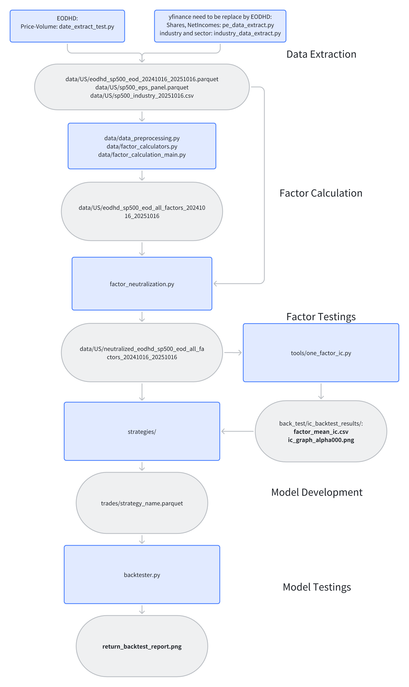
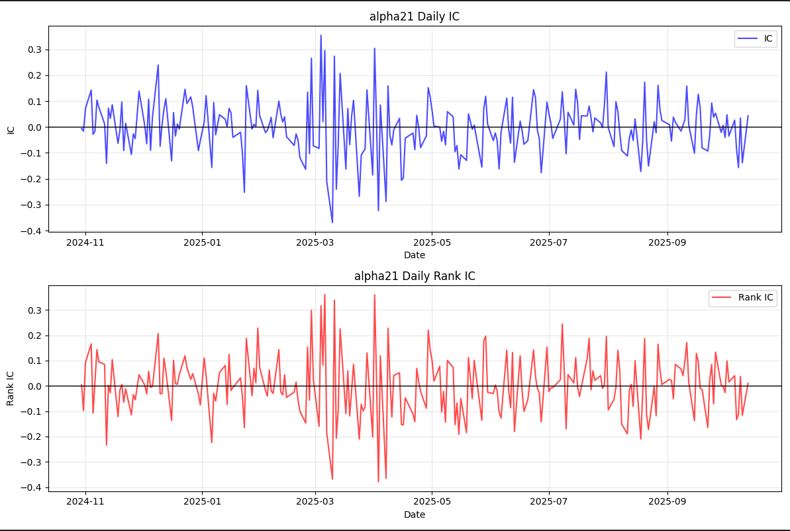
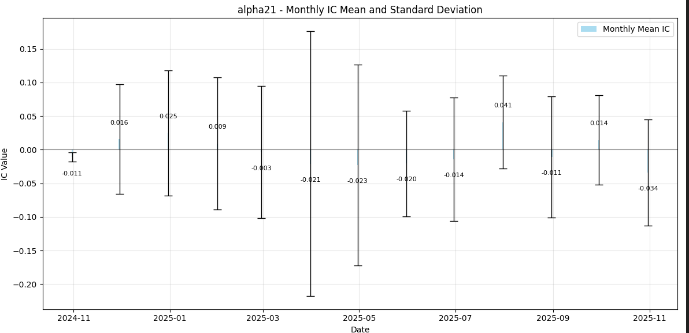
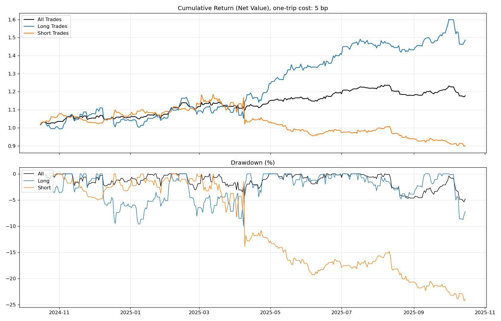
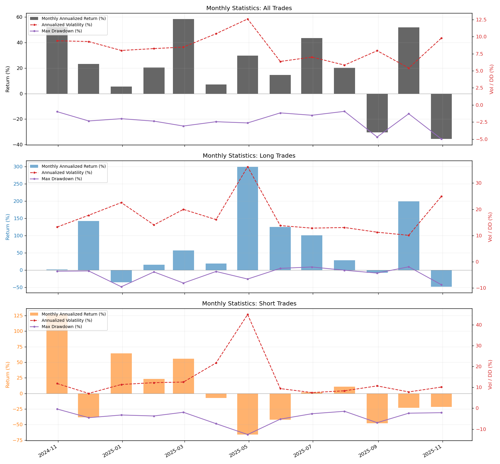

Project Overview
- Systematically computing a large library of cross-sectional equity factors
- Evaluating each factor’s predictive power via IC and IC decay
- Transforming factor signals into trades
- Measuring portfolio performance, drawdowns, and risk
Alpha191-style Factors
Cross-sectional IC
Backtesting
Python
Systematic Equity
Data & Factor Pipeline
Strategy Process Flow
Data Universe
The project uses standard equity market data, including: :contentReference[oaicite:6]{index=6}
- Price & volume time series
- Equity meta data: sector, industry classifications
- Fundamental fields: market cap, earnings, shares outstanding, etc.
Core Factor Scripts
-
factor_calculation_main.py– end-to-end driver that:- Reads cleaned input data under
data/sliced/ - Calls the factor library to compute factor panels
- Outputs factor matrices ready for IC backtesting
- Reads cleaned input data under
-
factor_calculators.py– library of factor functions (momentum, value, quality, volatility, etc.), designed as reusable APIs.
IC Analysis Tools
-
tools/one_factor_ic.py– computes and plots the **Information Coefficient** (IC) for a single factor over time. -
Factor IC summary is saved to:
back_test/ic_backtest_results/factor_mean_ic.csv
Backtester & Strategy Layer
Strategy Interface
The strategy layer takes factor outputs and converts them into **explicit trades**. The standard trade schema is:
['symbol', 'entry_ts', 'exit_ts', 'entry_price', 'exit_price', 'volume', 'type', 'exit_type', 'pnl', 'pnl_cost']
Backtester
The backtester consumes the trade logs and produces: :contentReference[oaicite:7]{index=7}
- Cumulative return and max drawdown charts
- Key performance statistics (return, volatility, Sharpe, drawdown)
- Factor-level IC graphs and summary CSVs
Example outputs (from the repository):
Information Coefficient (IC) Performance
Information Coefficient (IC) Montly Performance
Backtest Return Report
Monthly Stats Annulized Graph
| Metric | All Trades | Long Trades | Short Trades |
|---|---|---|---|
| Annualized Return | 0.1637 | 0.2818 | 0.0370 |
| Annualized Volatility | 0.0520 | 0.1402 | 0.1501 |
| Sharpe Ratio | 3.14598 | 2.00965 | 0.24630 |
| Max Drawdown | -0.02516 | -0.07528 | -0.14093 |
| Max Drawdown Period | 2025-03-10 to 2025-04-09 (30 days) | 2024-11-22 to 2024-12-19 (27 days) | 2025-03-13 to 2025-06-10 (89 days) |
| Win Rate | 0.51068 | 0.52968 | 0.49168 |
| Profit/Loss Ratio | 1.0919 | 1.0815 | 1.0822 |
Technical Stack
- Language: Python (3.10+)
- Libraries:
pandas,numpy,scipy,pyarroworfastparquet,matplotlib,seaborn(optional) - Data format: structured panel data for cross-sectional factor analysis
- Version control and documentation via Git/GitHub
A typical environment setup:
python -m venv .venv source .venv/bin/activate # Windows: .venv\Scripts\activate pip install -r requirements.txt
What I Learned
- How to design a **modular factor research pipeline** that’s reusable across strategies
- How to use IC and IC decay to evaluate **signal quality** and factor stability
- How to go from factor signals to **actual trade logs and portfolio PnL**
- How to structure backtesting outputs so they are easy to interpret for PMs or researchers
This project is a foundation I can extend with more advanced features like transaction cost modeling, portfolio construction (risk parity / mean-variance), and live signal monitoring.